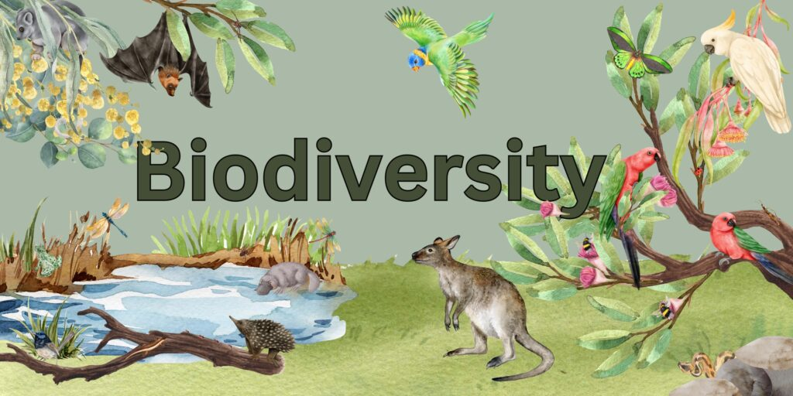
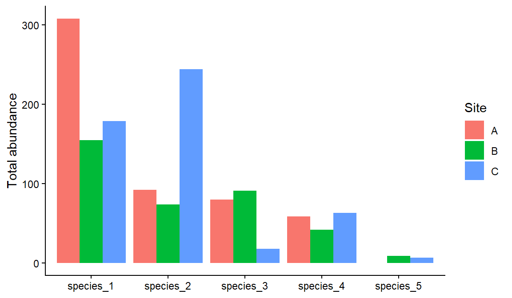
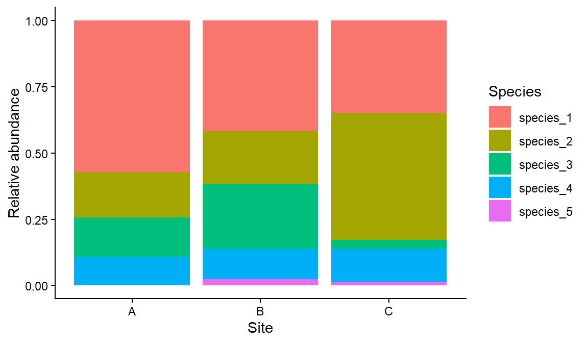
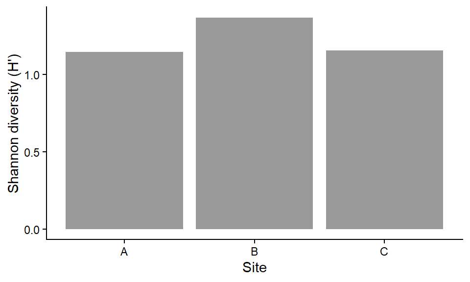
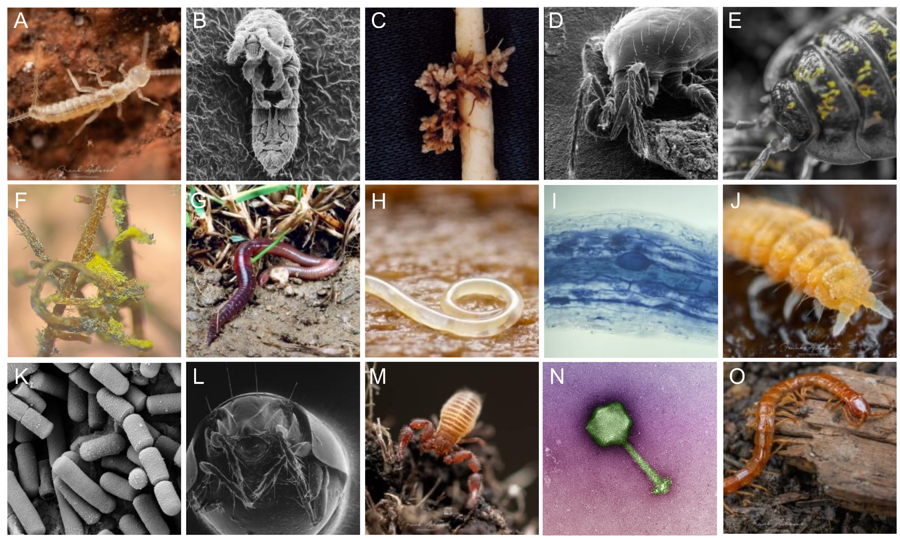
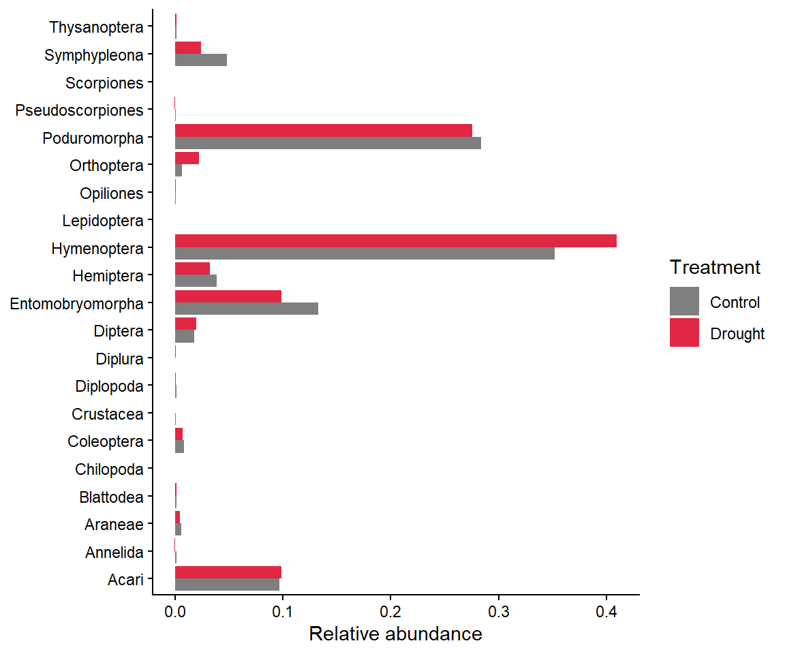

4 Diversity Indices
Week 4: Measuring abundance, richness and diversity
How many individuals are there? How many species? How evenly are individuals spread among those species? In this workshop you will calculate the most common measures of abundance, species richness and diversity from survey data. These skills are essential for field-based projects and for jobs in ecological consulting and monitoring. Workshop materials are available in the GitHub repository ECS200.

TipLearning outcomes
By the end of this workshop you should be able to:
- Calculate absolute abundance, relative abundance and density.
- Calculate species richness, and explain when rarefied richness is needed.
- Calculate and interpret the Shannon and Simpson diversity indices.
- Choose a suitable metric for a survey design and justify your choice.
Background
Biodiversity has two main components: richness (how many species) and evenness (how equally individuals are spread among the species). Different metrics capture different combinations of these.
| Metric | What it measures | Watch out for |
|---|---|---|
| Absolute abundance (\(N_i\)) | Number of individuals of a species | Depends on sampling effort. Only compare surveys with the same effort |
| Relative abundance (\(p_i\)) | Proportion of all individuals that belong to a species | Hides differences in total abundance |
| Density (\(d_i\)) | Individuals per unit area or effort | Needs an accurate measure of area or effort |
| Species richness (\(S\)) | Number of species | Increases with sampling effort and is sensitive to rare species |
| Rarefied richness | Richness standardised to the same number of individuals | Throws away information when samples differ a lot in size |
| Shannon index (\(H'\)) | Richness and evenness together | Hard to interpret in real-world terms. Moderately sensitive to rare species |
| Simpson index (\(D\)) | Mostly evenness and dominance | Not very sensitive to rare species |
Other measures, such as alpha, beta and gamma diversity (diversity within a site, between sites and across a region) and taxonomic diversity, can be calculated with the vegan package.
Use the app to see how richness and evenness change the Shannon and Simpson indices.
App: richness, evenness and diversity
Before we start
Code
# Week 4 workshop - Diversity indices
# Written by Nicholas Wu, 1234578, 18/03/2027
# install.packages("vegan") # run once in the console if needed
library(tidyverse) # data wrangling and plotting
library(vegan) # rarefied richness (and many other community ecology tools)
# setwd("C:/Users/YOUR-NAME/Documents/ECS200")We start with a small example survey: five samples at each of three sites, with the number of individuals of five species in each sample.
Code
survey_data <- data.frame(
site = c("A", "A", "A", "A", "A", "B", "B", "B", "b", "B", "C", "C", "C", "C", "C"),
species_1 = c(57, 73, 20, 75, 83, 41, 6, 61, 45, 2, 0, 93, 0, 0, 86),
species_2 = c(31, 12, 4, 41, 4, 49, 2, 7, 7, 9, 54, 64, 35, 38, 53),
species_3 = c(0, 38, 3, 0, 39, 0, 29, 24, 15, 23, 10, 0, 1, 5, 2),
species_4 = c(11, 28, 19, 0, 1, 34, 7, 0, 1, 0, 1, 0, 12, 45, 5),
species_5 = c(0, 0, 0, 0, 0, 4, 5, 0, 0, 0, 3, 1, 0, 1, 2)
)
# Quality check: one site was entered as "b" instead of "B"
survey_clean <- survey_data %>%
dplyr::mutate(site = dplyr::if_else(site == "b", "B", site),
site = factor(site))
# Long format (Week 2): one row per sample and species. This makes
# group-by-group calculations much easier.
survey_long <- survey_clean %>%
dplyr::mutate(sample = dplyr::row_number()) %>% # give each sample (row) a number
tidyr::pivot_longer(cols = species_1:species_5,
names_to = "species",
values_to = "abundance")
head(survey_long)# A tibble: 6 × 4
site sample species abundance
<fct> <int> <chr> <dbl>
1 A 1 species_1 57
2 A 1 species_2 31
3 A 1 species_3 0
4 A 1 species_4 11
5 A 1 species_5 0
6 A 2 species_1 73Part 1: Abundance
\[ N_i = \sum_{j=1}^{k} n_{ij} \]
where \(n_{ij}\) is the number of individuals of species i in sample j. In other words, the total number of individuals of that species counted.
Code
# Total abundance of each species at each site
abundance_sum <- survey_long %>%
dplyr::group_by(site, species) %>%
dplyr::summarise(total = sum(abundance), .groups = "drop")
abundance_sum# A tibble: 15 × 3
site species total
<fct> <chr> <dbl>
1 A species_1 308
2 A species_2 92
3 A species_3 80
4 A species_4 59
5 A species_5 0
6 B species_1 155
7 B species_2 74
8 B species_3 91
9 B species_4 42
10 B species_5 9
11 C species_1 179
12 C species_2 244
13 C species_3 18
14 C species_4 63
15 C species_5 7Code
ggplot2::ggplot(abundance_sum, ggplot2::aes(x = species, y = total, fill = site)) +
ggplot2::geom_col(position = "dodge") + # bars side by side for each site
ggplot2::labs(x = NULL, y = "Total abundance", fill = "Site") +
ggplot2::theme_classic()
\[ p_i = \frac{N_i}{N} \]
where \(N_i\) is the abundance of species i and \(N\) is the total abundance of all species. If 10 of the 50 individuals in a quadrat are species A, then \(p_A\) = 10/50 = 0.20, so species A makes up 20% of the community.
Code
# Relative abundance of each species within each site
relative_sum <- abundance_sum %>%
dplyr::group_by(site) %>% # within each site...
dplyr::mutate(site_total = sum(total), # ...total of all species
rel_abundance = total / site_total) %>% # ...each species' share
dplyr::ungroup()
relative_sum# A tibble: 15 × 5
site species total site_total rel_abundance
<fct> <chr> <dbl> <dbl> <dbl>
1 A species_1 308 539 0.571
2 A species_2 92 539 0.171
3 A species_3 80 539 0.148
4 A species_4 59 539 0.109
5 A species_5 0 539 0
6 B species_1 155 371 0.418
7 B species_2 74 371 0.199
8 B species_3 91 371 0.245
9 B species_4 42 371 0.113
10 B species_5 9 371 0.0243
11 C species_1 179 511 0.350
12 C species_2 244 511 0.477
13 C species_3 18 511 0.0352
14 C species_4 63 511 0.123
15 C species_5 7 511 0.0137Code
ggplot2::ggplot(relative_sum, ggplot2::aes(x = site, y = rel_abundance, fill = species)) +
ggplot2::geom_col() + # stacked bars add up to 1 for each site
ggplot2::labs(x = "Site", y = "Relative abundance", fill = "Species") +
ggplot2::theme_classic()
Species 1 makes up about 57% of the individuals at site A. Because relative abundances always add up to 1, they remove differences in total abundance between sites.
\[ d_i = \frac{N_i}{A} \]
where \(A\) is the area (or effort) sampled. For example, 42 lizards counted in a 0.5 ha plot gives \(d\) = 42 / 0.5 = 84 lizards per hectare. When every sample covers the same area, the mean count per sample is a measure of density (individuals per sample).
Code
# Mean number of individuals per sample, for each species at each site
survey_long %>%
dplyr::group_by(site, species) %>%
dplyr::summarise(density = mean(abundance), .groups = "drop") %>%
tidyr::pivot_wider(names_from = species, values_from = density) # easier-to-read table# A tibble: 3 × 6
site species_1 species_2 species_3 species_4 species_5
<fct> <dbl> <dbl> <dbl> <dbl> <dbl>
1 A 61.6 18.4 16 11.8 0
2 B 31 14.8 18.2 8.4 1.8
3 C 35.8 48.8 3.6 12.6 1.4Exercise 1 (10 min)
🧪 Calculate abundance metrics for this survey
Code
exercise_data <- data.frame(
site = c("A", "A", "A", "B", "B", "B", "C", "C", "C"),
plot = c(1, 2, 3, 1, 2, 3, 1, 2, 3),
species_1 = c(12, 7, 15, 4, 9, 6, 20, 18, 25),
species_2 = c(5, 2, 1, 10, 7, 4, 3, 1, 0),
species_3 = c(0, 3, 2, 6, 4, 5, 0, 1, 2),
species_4 = c(8, 6, 3, 1, 4, 2, 10, 7, 5)
)- What is the total (absolute) abundance of species 1 across all sites?
- What proportion of all individuals at site B belong to species 2?
- What is the mean density (individuals per plot) of species 3 at each site?
Show answer
Code
exercise_long <- exercise_data %>%
tidyr::pivot_longer(cols = species_1:species_4, names_to = "species", values_to = "abundance")
# 1. Total abundance of species 1
exercise_long %>%
dplyr::filter(species == "species_1") %>%
dplyr::summarise(total = sum(abundance)) # 116# A tibble: 1 × 1
total
<dbl>
1 116Code
# 2. Relative abundance of each species at site B
exercise_long %>%
dplyr::filter(site == "B") %>%
dplyr::group_by(species) %>%
dplyr::summarise(total = sum(abundance)) %>%
dplyr::mutate(rel_abundance = total / sum(total)) # species_2 = 21 / 62 = 0.34# A tibble: 4 × 3
species total rel_abundance
<chr> <dbl> <dbl>
1 species_1 19 0.306
2 species_2 21 0.339
3 species_3 15 0.242
4 species_4 7 0.113Code
# 3. Mean density of species 3 per plot at each site
exercise_long %>%
dplyr::filter(species == "species_3") %>%
dplyr::group_by(site) %>%
dplyr::summarise(density = mean(abundance)) # A = 1.67, B = 5, C = 1# A tibble: 3 × 2
site density
<chr> <dbl>
1 A 1.67
2 B 5
3 C 1 Part 2: Species richness
\[ S = \text{number of species observed} \]
Count the species with an abundance greater than zero. If you forget to remove the zeros, every site gets every species in the dataset.
Code
survey_long %>%
dplyr::group_by(site, species) %>%
dplyr::summarise(total = sum(abundance), .groups = "drop") %>%
dplyr::filter(total > 0) %>% # keep only species that were found
dplyr::group_by(site) %>%
dplyr::summarise(richness = dplyr::n_distinct(species)) # count the different species# A tibble: 3 × 2
site richness
<fct> <int>
1 A 4
2 B 5
3 C 5Site A has 4 species and sites B and C have all 5.
The more individuals you count, the more species you find. If sites were sampled with different effort, differences in richness may just reflect differences in sample size. Rarefaction estimates how many species you would have found if every site had the same number of individuals (the smallest total among the sites).
Code
# Total of each species per site, in wide format (one row per site)
site_totals <- survey_clean %>%
dplyr::group_by(site) %>%
dplyr::summarise(dplyr::across(species_1:species_5, sum))
# The smallest number of individuals counted at any site
n_min <- min(rowSums(site_totals[, -1])) # [, -1] drops the site column
# Expected number of species in a sample of n_min individuals
site_totals %>%
dplyr::mutate(rarefied_richness = vegan::rarefy(site_totals[, -1], sample = n_min)) %>%
dplyr::select(site, rarefied_richness)# A tibble: 3 × 2
site rarefied_richness
<fct> <dbl>
1 A 4
2 B 5
3 C 5.00Here the rarefied values are almost the same as the raw richness, because the three sites had similar totals. Rarefaction matters most when effort differs a lot, or when there are many rare species. Always justify which metric you use in your report.
Part 3: Diversity indices
\[ H' = -\sum_{i=1}^{S} p_i \ln(p_i) \]
where \(p_i\) is the relative abundance of species i and \(S\) is the number of species. \(H'\) = 0 when only one species is present. It increases with more species and with more even abundances.
Because we already calculated relative abundances, the formula translates directly into R:
Code
shannon_sum <- relative_sum %>%
dplyr::filter(rel_abundance > 0) %>% # log(0) is undefined, and absent species add nothing
dplyr::group_by(site) %>%
dplyr::summarise(shannon = -sum(rel_abundance * log(rel_abundance)))
shannon_sum# A tibble: 3 × 2
site shannon
<fct> <dbl>
1 A 1.15
2 B 1.37
3 C 1.16Code
ggplot2::ggplot(shannon_sum, ggplot2::aes(x = site, y = shannon)) +
ggplot2::geom_col(fill = "grey60") +
ggplot2::labs(x = "Site", y = "Shannon diversity (H')") +
ggplot2::theme_classic()
Site B has the highest diversity: it has the most species and the most even distribution of individuals among them.
\[ D = \sum_{i=1}^{S} p_i^2 \qquad \text{Simpson's diversity} = 1 - D \qquad \text{Inverse Simpson} = \frac{1}{D} \]
\(D\) is the probability that two individuals picked at random belong to the same species, so 1 − D (the probability they are different species) increases with diversity. The inverse Simpson index (1/D) can be read as the “effective number of equally common species”.
Code
relative_sum %>%
dplyr::group_by(site) %>%
dplyr::summarise(simpson = 1 - sum(rel_abundance^2),
inv_simpson = 1 / sum(rel_abundance^2))# A tibble: 3 × 3
site simpson inv_simpson
<fct> <dbl> <dbl>
1 A 0.610 2.57
2 B 0.712 3.47
3 C 0.633 2.72
NoteA shortcut with
vegan
vegan::diversity() calculates the same indices from wide data (one row per site, one column per species):
Code
vegan::diversity(site_totals[, -1], index = "shannon") 1 2 3
1.146836 1.367746 1.155124 Code
vegan::diversity(site_totals[, -1], index = "simpson") 1 2 3
0.6103242 0.7120989 0.6326646 Code
vegan::diversity(site_totals[, -1], index = "invsimpson") 1 2 3
2.566236 3.473415 2.722307 Exercise 2 (10 min)
🧪 Calculate richness and diversity for exercise_data
- What is the species richness at each site?
- What is the Shannon diversity of site A?
- What is the inverse Simpson index of site B?
Show answer
Code
exercise_rel <- exercise_long %>%
dplyr::group_by(site, species) %>%
dplyr::summarise(total = sum(abundance), .groups = "drop") %>%
dplyr::group_by(site) %>%
dplyr::mutate(p = total / sum(total)) %>%
dplyr::filter(p > 0)
exercise_rel %>%
dplyr::summarise(richness = dplyr::n_distinct(species),
shannon = -sum(p * log(p)),
inv_simpson = 1 / sum(p^2))# A tibble: 3 × 4
site richness shannon inv_simpson
<chr> <int> <dbl> <dbl>
1 A 4 1.15 2.67
2 B 4 1.32 3.57
3 C 4 0.849 1.89Code
# 1. A = 4, B = 4, C = 4 species
# 2. Shannon (site A) = 1.15
# 3. Inverse Simpson (site B) = 3.57Assessment
Task to complete before the end of the workshop.
week04_assessment.R invert_exp_survey.csv
Does drought change soil invertebrate communities? This real dataset comes from a field experiment in which rain-out shelters created an experimental drought, next to control plots, in 5 blocks. Invertebrates were caught in pitfall traps (3 traps per plot, sampled in several months) (Farkas et al., 2025). Invertebrates were identified to order, except Crustacea (subphylum), Diplopoda and Chilopoda (class) and Annelida (phylum). We will call these groups “orders”.

- Import the data and run a quality check (structure, missing values, duplicates).
- Convert the data to long format with one row per sample and order. Leave out the
unidentifiedcolumn. Why should unidentified individuals not be counted as a separate group when calculating richness? - Calculate the relative abundance of each order in the control and drought treatments, and plot it. Which order dominates both treatments?
- Calculate the richness (number of orders with at least one individual) in each treatment.
- Calculate the Shannon diversity index for each treatment and plot it.
- Interpretation: in two or three sentences, describe how drought affected the invertebrate community, using your answers to Q3–Q5.
The relative abundance figure might look like this:

NoteHow your assessment is marked
Submit one R script (.R) before the end of the class. Write your answers to written questions as # comments next to the code that produced them.
| Score | What it looks like |
|---|---|
| 0 | No submission or no attempt. |
| 0.25 | Submitted, but a very poor attempt (e.g. incomplete, or lots of gaps). |
| 0.5 | Most questions answered, or all answered but most annotations missing. |
| 0.75 | All questions answered, but some annotations missing or some answers incorrect. |
| 1 | Everything completed, with annotations on all code so the marker can follow it. |
Tip: an annotation is a short # comment that says what the line does and why. For example: # remove the one plant with a stem dry mass of 7.4 g (data entry error).
For the adventurous
Calculate the Shannon index for each treatment × block combination and plot the values for each treatment. This shows the variation among experimental blocks, which is what your report should show, rather than a single value per treatment.
Additional resources
- D. Zelený’s Analysis of community ecology data in R: more on diversity and evenness indices, with R code.
vegandiversity vignette for rarefaction curves, beta diversity and more.- Coding Club: Introduction to ordination, a next step for comparing whole communities with
vegan.